Recording Ansible
building ansible with Ansible
& testing it with Ansible
David Moreau-Simard (fosstodon.org/@rfc2549)
Config Management Camp 2023
$ whoami
---
- name: David Moreau-Simard
hosts:
- dmsimard:matrix.org
- fosstodon.org/@rfc2549
vars:
location: Montreal, Canada (or rabbit holes)
profile: sysadmin, dev/ops, CI/CD, SRE
roles:
- Ansible user since version 1.8 or so (2014?)
- Previously in the Ansible community team @ Red Hat
- Part time open source contributor (between dev ops and dad ops)About this presentation
- You can try this at home and even help improve it: it's open source 🎉
- Not exhaustive: meant as a high level overview with references to explore
- Happy to chat about it, feel free to reach out !
Ansible

https://github.com/ansible/ansible/blob/devel/README.rst
Configuration management with Ansible
- name: Setup nginx
hosts: web01
become: true
handlers:
- name: Restart nginx
service:
name: nginx
state: restarted
tasks:
- name: Install nginx
package:
name: nginx
state: present
- name: Configure virtual host
template:
src: vhost.conf.j2
dest: /etc/nginx/conf.d/service.conf
notify:
- Restart nginx
- name: Ensure nginx is started
service:
name: nginx
state: started
enabled: trueOther use cases
https://www.youtube.com/watch?v=TVq88JeJbw4
<3 geerlingguy
ansible
Includes ansible-core and is a batteries-included package that provides a curated set of Ansible collections
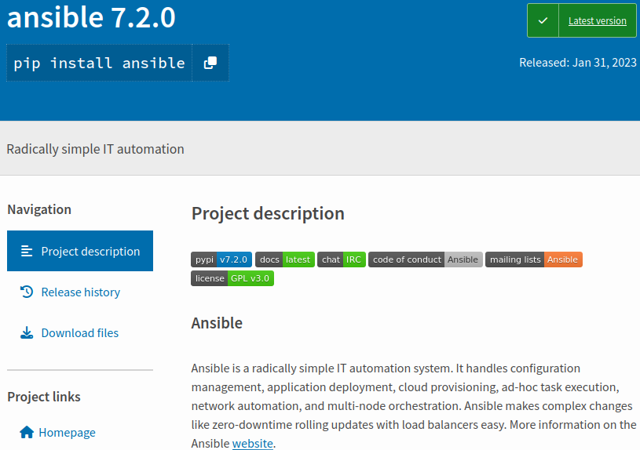https://pypi.org/project/ansible/
ansible-core
Contains the base engine and a small subset of modules and plugins
Provides the CLIs for: ansible, ansible-doc, ansible-inventory, ansible-playbook, ansible-galaxy, ansible-test
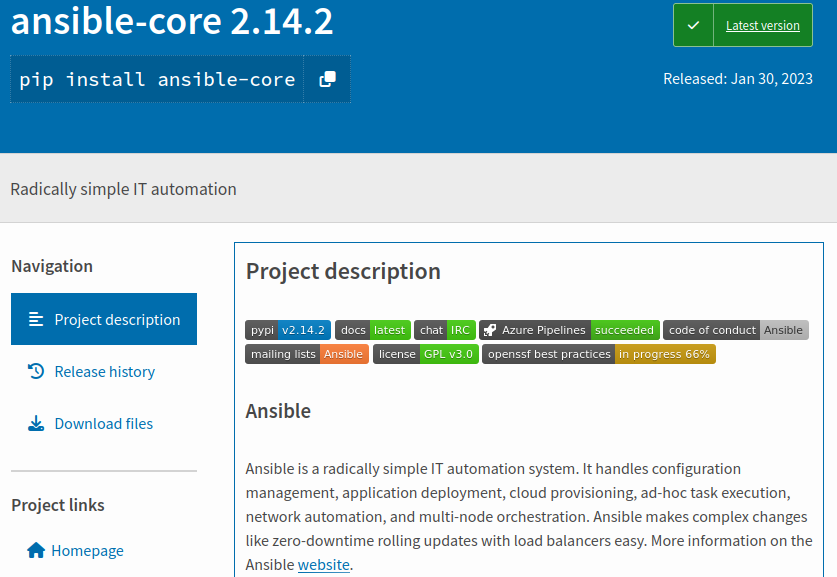https://pypi.org/project/ansible-core/
Can we build ansible with Ansible ?
What could go wrong ?
¯\(ツ)/¯
Building a python source distribution package
Doing it manually
$ git clone https://github.com/ansible/ansible ~/src/ansible
$ cd ~/src/ansible; python3 setup.py sdist
$ ls dist/
ansible-core-2.15.0.dev0.tar.gz # <-- ansible-core !Doing it with Ansible
- name: Clone the ansible repository
git:
repo: https://github.com/ansible/ansible
dest: "{{ '~/src/ansible' | expanduser }}"
- name: Build a distribution package
command: python3 setup.py sdist
args:
chdir: "{{ '~/src/ansible' | expanduser }}"
creates: "{{ '~/src/ansible' | expanduser }}/dist/ansible-core-2.15.0.dev0.tar.gz"Why ?

https://xkcd.com/1319/
Building a python source distribution package
Doing it manually
$ git clone https://github.com/ansible/ansible
fatal: destination path 'ansible' already exists and is not an empty directory.Doing it with Ansible
TASK [Clone the ansible repository] *****************************************************************************************************
ok: [localhost]
TASK [Build a distribution package] *****************************************************************************************************
ok: [localhost]
PLAY RECAP ******************************************************************************************************************************
localhost : ok=2 changed=0 unreachable=0 failed=0 skipped=0 rescued=0 ignored=0What about the ansible package ?
$ wget https://files.pythonhosted.org/packages/05/cd/d5c46caa5d8c6c11ebad76accd2cec355a10ba80c71780ecdf0bc6748a62/ansible-7.1.0.tar.gz
$ tar -xzf ansible-7.1.0.tar.gz
$ tree -L 1 ansible-7.1.0
ansible-7.1.0
├── ansible_collections # included collections ("batteries included")
├── ansible.egg-info
├── build-ansible.sh # intended to rebuild the package
├── CHANGELOG-v7.rst # aggregated changelog from every collection
├── COPYING
├── debian
├── MANIFEST.in
├── PKG-INFO
├── porting_guide_7.rst # aggregated porting guide from every collection
├── README.rst
├── setup.cfg
└── setup.py
3 directories, 9 filesInside ansible_collections
$ tree -L 2 ansible-7.1.0/ansible_collections/
ansible-7.1.0/ansible_collections/
├── amazon
│ └── aws
├── ansible
│ ├── netcommon
│ ├── posix
│ ├── utils
│ └── windows
├── ansible_community.py
├── ansible_release.py
├── arista
│ └── eos
├── awx
│ └── awx
├── azure
│ └── azcollection
├── check_point
│ └── mgmt
├── chocolatey
│ └── chocolatey
├── cisco
│ ├── aci
│ ├── asa
│ ├── dnac
│ ├── intersight
│ ├── ios
│ ├── iosxr
│ ├── ise
│ ├── meraki
│ ├── mso
│ ├── nso
│ ├── nxos
│ └── ucs
├── cloud
│ └── common
├── cloudscale_ch
│ └── cloud
├── community
│ ├── aws
│ ├── azure
│ ├── ciscosmb
│ ├── crypto
│ ├── digitalocean
│ ├── dns
│ ├── docker
│ ├── fortios
│ ├── general
│ ├── google
│ ├── grafana
│ ├── hashi_vault
│ ├── hrobot
│ ├── libvirt
│ ├── mongodb
│ ├── mysql
│ ├── network
│ ├── okd
│ ├── postgresql
│ ├── proxysql
│ ├── rabbitmq
│ ├── routeros
│ ├── sap
│ ├── sap_libs
│ ├── skydive
│ ├── sops
│ ├── vmware
│ ├── windows
│ └── zabbix
├── containers
│ └── podman
├── cyberark
│ ├── conjur
│ └── pas
├── dellemc
│ ├── enterprise_sonic
│ ├── openmanage
│ ├── os10
│ ├── os6
│ └── os9
├── f5networks
│ └── f5_modules
├── fortinet
│ ├── fortimanager
│ └── fortios
├── frr
│ └── frr
├── gluster
│ └── gluster
├── google
│ └── cloud
├── grafana
│ └── grafana
├── hetzner
│ └── hcloud
├── hpe
│ └── nimble
├── ibm
│ ├── qradar
│ └── spectrum_virtualize
├── infinidat
│ └── infinibox
├── infoblox
│ └── nios_modules
├── inspur
│ ├── ispim
│ └── sm
├── junipernetworks
│ └── junos
├── kubernetes
│ └── core
├── lowlydba
│ └── sqlserver
├── mellanox
│ └── onyx
├── netapp
│ ├── aws
│ ├── azure
│ ├── cloudmanager
│ ├── elementsw
│ ├── ontap
│ ├── storagegrid
│ └── um_info
├── netapp_eseries
│ └── santricity
├── netbox
│ └── netbox
├── ngine_io
│ ├── cloudstack
│ ├── exoscale
│ └── vultr
├── openstack
│ └── cloud
├── openvswitch
│ └── openvswitch
├── ovirt
│ └── ovirt
├── purestorage
│ ├── flasharray
│ ├── flashblade
│ └── fusion
├── sensu
│ └── sensu_go
├── splunk
│ └── es
├── theforeman
│ └── foreman
├── t_systems_mms
│ └── icinga_director
├── vmware
│ └── vmware_rest
├── vultr
│ └── cloud
├── vyos
│ └── vyos
└── wti
└── remote
152 directories, 2 filesInside a collection: community.general
$ tree -L 3 ansible-7.1.0/ansible_collections/community/general
ansible-7.1.0/ansible_collections/community/general/
├── CHANGELOG.rst
├── CHANGELOG.rst.license
├── changelogs
│ ├── changelog.yaml
│ ├── changelog.yaml.license
│ ├── config.yaml
│ └── fragments
├── commit-rights.md
├── CONTRIBUTING.md
├── COPYING
├── docs
│ └── docsite
│ ├── extra-docs.yml
│ ├── helper
│ ├── links.yml
│ └── rst
├── FILES.json
├── LICENSES
│ ├── BSD-2-Clause.txt
│ ├── GPL-3.0-or-later.txt
│ ├── MIT.txt
│ └── PSF-2.0.txt
├── MANIFEST.json
├── meta
│ └── runtime.yml
├── plugins
│ ├── action
│ │ ├── iptables_state.py
│ │ └── shutdown.py
│ ├── become
│ │ ├── doas.py
│ │ ├── dzdo.py
│ │ ├── ksu.py
│ │ ├── machinectl.py
│ │ ├── pbrun.py
│ │ ├── pfexec.py
│ │ ├── pmrun.py
│ │ ├── sesu.py
│ │ └── sudosu.py
│ ├── cache
│ │ ├── memcached.py
│ │ ├── pickle.py
│ │ ├── redis.py
│ │ └── yaml.py
│ ├── callback
│ │ ├── cgroup_memory_recap.py
│ │ ├── context_demo.py
│ │ ├── counter_enabled.py
│ │ ├── dense.py
│ │ ├── diy.py
│ │ ├── elastic.py
│ │ ├── hipchat.py
│ │ ├── jabber.py
│ │ ├── loganalytics.py
│ │ ├── logdna.py
│ │ ├── logentries.py
│ │ ├── log_plays.py
│ │ ├── logstash.py
│ │ ├── mail.py
│ │ ├── nrdp.py
│ │ ├── null.py
│ │ ├── opentelemetry.py
│ │ ├── say.py
│ │ ├── selective.py
│ │ ├── slack.py
│ │ ├── splunk.py
│ │ ├── sumologic.py
│ │ ├── syslog_json.py
│ │ ├── unixy.py
│ │ └── yaml.py
│ ├── connection
│ │ ├── chroot.py
│ │ ├── funcd.py
│ │ ├── iocage.py
│ │ ├── jail.py
│ │ ├── lxc.py
│ │ ├── lxd.py
│ │ ├── qubes.py
│ │ ├── saltstack.py
│ │ └── zone.py
│ ├── doc_fragments
│ │ ├── alicloud.py
│ │ ├── attributes.py
│ │ ├── auth_basic.py
│ │ ├── bitbucket.py
│ │ ├── dimensiondata.py
│ │ ├── dimensiondata_wait.py
│ │ ├── emc.py
│ │ ├── gitlab.py
│ │ ├── hpe3par.py
│ │ ├── hwc.py
│ │ ├── ibm_storage.py
│ │ ├── influxdb.py
│ │ ├── ipa.py
│ │ ├── keycloak.py
│ │ ├── ldap.py
│ │ ├── lxca_common.py
│ │ ├── manageiq.py
│ │ ├── nomad.py
│ │ ├── oneview.py
│ │ ├── online.py
│ │ ├── opennebula.py
│ │ ├── openswitch.py
│ │ ├── oracle_creatable_resource.py
│ │ ├── oracle_display_name_option.py
│ │ ├── oracle_name_option.py
│ │ ├── oracle.py
│ │ ├── oracle_tags.py
│ │ ├── oracle_wait_options.py
│ │ ├── pritunl.py
│ │ ├── proxmox.py
│ │ ├── purestorage.py
│ │ ├── rackspace.py
│ │ ├── redis.py
│ │ ├── rundeck.py
│ │ ├── scaleway.py
│ │ ├── scaleway_waitable_resource.py
│ │ ├── utm.py
│ │ ├── vexata.py
│ │ └── xenserver.py
│ ├── filter
│ │ ├── counter.py
│ │ ├── crc32.py
│ │ ├── dict_kv.py
│ │ ├── dict.py
│ │ ├── from_csv.py
│ │ ├── groupby_as_dict.py
│ │ ├── hashids_decode.yml
│ │ ├── hashids_encode.yml
│ │ ├── hashids.py
│ │ ├── jc.py
│ │ ├── json_query.py
│ │ ├── lists_mergeby.py
│ │ ├── random_mac.py
│ │ ├── time.py
│ │ ├── to_days.yml
│ │ ├── to_hours.yml
│ │ ├── to_milliseconds.yml
│ │ ├── to_minutes.yml
│ │ ├── to_months.yml
│ │ ├── to_seconds.yml
│ │ ├── to_time_unit.yml
│ │ ├── to_weeks.yml
│ │ ├── to_years.yml
│ │ ├── unicode_normalize.py
│ │ └── version_sort.py
│ ├── inventory
│ │ ├── cobbler.py
│ │ ├── gitlab_runners.py
│ │ ├── icinga2.py
│ │ ├── linode.py
│ │ ├── lxd.py
│ │ ├── nmap.py
│ │ ├── online.py
│ │ ├── opennebula.py
│ │ ├── proxmox.py
│ │ ├── scaleway.py
│ │ ├── stackpath_compute.py
│ │ ├── virtualbox.py
│ │ └── xen_orchestra.py
│ ├── lookup
│ │ ├── bitwarden.py
│ │ ├── cartesian.py
│ │ ├── chef_databag.py
│ │ ├── collection_version.py
│ │ ├── consul_kv.py
│ │ ├── credstash.py
│ │ ├── cyberarkpassword.py
│ │ ├── dependent.py
│ │ ├── dig.py
│ │ ├── dnstxt.py
│ │ ├── dsv.py
│ │ ├── etcd3.py
│ │ ├── etcd.py
│ │ ├── filetree.py
│ │ ├── flattened.py
│ │ ├── hiera.py
│ │ ├── keyring.py
│ │ ├── lastpass.py
│ │ ├── lmdb_kv.py
│ │ ├── manifold.py
│ │ ├── onepassword.py
│ │ ├── onepassword_raw.py
│ │ ├── passwordstore.py
│ │ ├── random_pet.py
│ │ ├── random_string.py
│ │ ├── random_words.py
│ │ ├── redis.py
│ │ ├── revbitspss.py
│ │ ├── shelvefile.py
│ │ └── tss.py
│ ├── modules
│ │ ├── aerospike_migrations.py
│ │ ├── airbrake_deployment.py
│ │ ├── aix_devices.py
│ │ ├── aix_filesystem.py
│ │ ├── aix_inittab.py
│ │ ├── aix_lvg.py
│ │ ├── aix_lvol.py
│ │ ├── alerta_customer.py
│ │ ├── ali_instance_info.py
│ │ ├── ali_instance.py
│ │ ├── alternatives.py
│ │ ├── ansible_galaxy_install.py
│ │ ├── apache2_mod_proxy.py
│ │ ├── apache2_module.py
│ │ ├── apk.py
│ │ ├── apt_repo.py
│ │ ├── apt_rpm.py
│ │ ├── archive.py
│ │ ├── atomic_container.py
│ │ ├── atomic_host.py
│ │ ├── atomic_image.py
│ │ ├── awall.py
│ │ ├── beadm.py
│ │ ├── bearychat.py
│ │ ├── bigpanda.py
│ │ ├── bitbucket_access_key.py
│ │ ├── bitbucket_pipeline_key_pair.py
│ │ ├── bitbucket_pipeline_known_host.py
│ │ ├── bitbucket_pipeline_variable.py
│ │ ├── bower.py
│ │ ├── bundler.py
│ │ ├── bzr.py
│ │ ├── campfire.py
│ │ ├── capabilities.py
│ │ ├── cargo.py
│ │ ├── catapult.py
│ │ ├── circonus_annotation.py
│ │ ├── cisco_webex.py
│ │ ├── clc_aa_policy.py
│ │ ├── clc_alert_policy.py
│ │ ├── clc_blueprint_package.py
│ │ ├── clc_firewall_policy.py
│ │ ├── clc_group.py
│ │ ├── clc_loadbalancer.py
│ │ ├── clc_modify_server.py
│ │ ├── clc_publicip.py
│ │ ├── clc_server.py
│ │ ├── clc_server_snapshot.py
│ │ ├── cloudflare_dns.py
│ │ ├── cloud_init_data_facts.py
│ │ ├── cobbler_sync.py
│ │ ├── cobbler_system.py
│ │ ├── composer.py
│ │ ├── consul_acl.py
│ │ ├── consul_kv.py
│ │ ├── consul.py
│ │ ├── consul_session.py
│ │ ├── copr.py
│ │ ├── cpanm.py
│ │ ├── cronvar.py
│ │ ├── crypttab.py
│ │ ├── datadog_downtime.py
│ │ ├── datadog_event.py
│ │ ├── datadog_monitor.py
│ │ ├── dconf.py
│ │ ├── deploy_helper.py
│ │ ├── dimensiondata_network.py
│ │ ├── dimensiondata_vlan.py
│ │ ├── discord.py
│ │ ├── django_manage.py
│ │ ├── dnf_versionlock.py
│ │ ├── dnsimple_info.py
│ │ ├── dnsimple.py
│ │ ├── dnsmadeeasy.py
│ │ ├── dpkg_divert.py
│ │ ├── easy_install.py
│ │ ├── ejabberd_user.py
│ │ ├── elasticsearch_plugin.py
│ │ ├── emc_vnx_sg_member.py
│ │ ├── etcd3.py
│ │ ├── facter.py
│ │ ├── filesize.py
│ │ ├── filesystem.py
│ │ ├── flatpak.py
│ │ ├── flatpak_remote.py
│ │ ├── flowdock.py
│ │ ├── gandi_livedns.py
│ │ ├── gconftool2_info.py
│ │ ├── gconftool2.py
│ │ ├── gem.py
│ │ ├── git_config.py
│ │ ├── github_deploy_key.py
│ │ ├── github_issue.py
│ │ ├── github_key.py
│ │ ├── github_release.py
│ │ ├── github_repo.py
│ │ ├── github_webhook_info.py
│ │ ├── github_webhook.py
│ │ ├── gitlab_branch.py
│ │ ├── gitlab_deploy_key.py
│ │ ├── gitlab_group_members.py
│ │ ├── gitlab_group.py
│ │ ├── gitlab_group_variable.py
│ │ ├── gitlab_hook.py
│ │ ├── gitlab_project_badge.py
│ │ ├── gitlab_project_members.py
│ │ ├── gitlab_project.py
│ │ ├── gitlab_project_variable.py
│ │ ├── gitlab_protected_branch.py
│ │ ├── gitlab_runner.py
│ │ ├── gitlab_user.py
│ │ ├── grove.py
│ │ ├── gunicorn.py
│ │ ├── hana_query.py
│ │ ├── haproxy.py
│ │ ├── heroku_collaborator.py
│ │ ├── hg.py
│ │ ├── hipchat.py
│ │ ├── homebrew_cask.py
│ │ ├── homebrew.py
│ │ ├── homebrew_tap.py
│ │ ├── homectl.py
│ │ ├── honeybadger_deployment.py
│ │ ├── hpilo_boot.py
│ │ ├── hpilo_info.py
│ │ ├── hponcfg.py
│ │ ├── htpasswd.py
│ │ ├── hwc_ecs_instance.py
│ │ ├── hwc_evs_disk.py
│ │ ├── hwc_network_vpc.py
│ │ ├── hwc_smn_topic.py
│ │ ├── hwc_vpc_eip.py
│ │ ├── hwc_vpc_peering_connect.py
│ │ ├── hwc_vpc_port.py
│ │ ├── hwc_vpc_private_ip.py
│ │ ├── hwc_vpc_route.py
│ │ ├── hwc_vpc_security_group.py
│ │ ├── hwc_vpc_security_group_rule.py
│ │ ├── hwc_vpc_subnet.py
│ │ ├── ibm_sa_domain.py
│ │ ├── ibm_sa_host_ports.py
│ │ ├── ibm_sa_host.py
│ │ ├── ibm_sa_pool.py
│ │ ├── ibm_sa_vol_map.py
│ │ ├── ibm_sa_vol.py
│ │ ├── icinga2_feature.py
│ │ ├── icinga2_host.py
│ │ ├── idrac_redfish_command.py
│ │ ├── idrac_redfish_config.py
│ │ ├── idrac_redfish_info.py
│ │ ├── ilo_redfish_config.py
│ │ ├── ilo_redfish_info.py
│ │ ├── imc_rest.py
│ │ ├── imgadm.py
│ │ ├── infinity.py
│ │ ├── influxdb_database.py
│ │ ├── influxdb_query.py
│ │ ├── influxdb_retention_policy.py
│ │ ├── influxdb_user.py
│ │ ├── influxdb_write.py
│ │ ├── ini_file.py
│ │ ├── installp.py
│ │ ├── interfaces_file.py
│ │ ├── ipa_config.py
│ │ ├── ipa_dnsrecord.py
│ │ ├── ipa_dnszone.py
│ │ ├── ipa_group.py
│ │ ├── ipa_hbacrule.py
│ │ ├── ipa_hostgroup.py
│ │ ├── ipa_host.py
│ │ ├── ipa_otpconfig.py
│ │ ├── ipa_otptoken.py
│ │ ├── ipa_pwpolicy.py
│ │ ├── ipa_role.py
│ │ ├── ipa_service.py
│ │ ├── ipa_subca.py
│ │ ├── ipa_sudocmdgroup.py
│ │ ├── ipa_sudocmd.py
│ │ ├── ipa_sudorule.py
│ │ ├── ipa_user.py
│ │ ├── ipa_vault.py
│ │ ├── ipify_facts.py
│ │ ├── ipinfoio_facts.py
│ │ ├── ipmi_boot.py
│ │ ├── ipmi_power.py
│ │ ├── ip_netns.py
│ │ ├── iptables_state.py
│ │ ├── ipwcli_dns.py
│ │ ├── irc.py
│ │ ├── iso_create.py
│ │ ├── iso_customize.py
│ │ ├── iso_extract.py
│ │ ├── jabber.py
│ │ ├── java_cert.py
│ │ ├── java_keystore.py
│ │ ├── jboss.py
│ │ ├── jenkins_build.py
│ │ ├── jenkins_job_info.py
│ │ ├── jenkins_job.py
│ │ ├── jenkins_plugin.py
│ │ ├── jenkins_script.py
│ │ ├── jira.py
│ │ ├── kernel_blacklist.py
│ │ ├── keycloak_authentication.py
│ │ ├── keycloak_client.py
│ │ ├── keycloak_client_rolemapping.py
│ │ ├── keycloak_clientscope.py
│ │ ├── keycloak_clientsecret_info.py
│ │ ├── keycloak_clientsecret_regenerate.py
│ │ ├── keycloak_clienttemplate.py
│ │ ├── keycloak_group.py
│ │ ├── keycloak_identity_provider.py
│ │ ├── keycloak_realm_info.py
│ │ ├── keycloak_realm.py
│ │ ├── keycloak_role.py
│ │ ├── keycloak_user_federation.py
│ │ ├── keycloak_user_rolemapping.py
│ │ ├── keyring_info.py
│ │ ├── keyring.py
│ │ ├── kibana_plugin.py
│ │ ├── launchd.py
│ │ ├── layman.py
│ │ ├── lbu.py
│ │ ├── ldap_attrs.py
│ │ ├── ldap_entry.py
│ │ ├── ldap_passwd.py
│ │ ├── ldap_search.py
│ │ ├── librato_annotation.py
│ │ ├── linode.py
│ │ ├── linode_v4.py
│ │ ├── listen_ports_facts.py
│ │ ├── lldp.py
│ │ ├── locale_gen.py
│ │ ├── logentries_msg.py
│ │ ├── logentries.py
│ │ ├── logstash_plugin.py
│ │ ├── lvg.py
│ │ ├── lvol.py
│ │ ├── lxca_cmms.py
│ │ ├── lxca_nodes.py
│ │ ├── lxc_container.py
│ │ ├── lxd_container.py
│ │ ├── lxd_profile.py
│ │ ├── lxd_project.py
│ │ ├── macports.py
│ │ ├── mail.py
│ │ ├── make.py
│ │ ├── manageiq_alert_profiles.py
│ │ ├── manageiq_alerts.py
│ │ ├── manageiq_group.py
│ │ ├── manageiq_policies_info.py
│ │ ├── manageiq_policies.py
│ │ ├── manageiq_provider.py
│ │ ├── manageiq_tags_info.py
│ │ ├── manageiq_tags.py
│ │ ├── manageiq_tenant.py
│ │ ├── manageiq_user.py
│ │ ├── mas.py
│ │ ├── matrix.py
│ │ ├── mattermost.py
│ │ ├── maven_artifact.py
│ │ ├── memset_dns_reload.py
│ │ ├── memset_memstore_info.py
│ │ ├── memset_server_info.py
│ │ ├── memset_zone_domain.py
│ │ ├── memset_zone.py
│ │ ├── memset_zone_record.py
│ │ ├── mksysb.py
│ │ ├── modprobe.py
│ │ ├── monit.py
│ │ ├── mqtt.py
│ │ ├── mssql_db.py
│ │ ├── mssql_script.py
│ │ ├── nagios.py
│ │ ├── netcup_dns.py
│ │ ├── newrelic_deployment.py
│ │ ├── nexmo.py
│ │ ├── nginx_status_info.py
│ │ ├── nictagadm.py
│ │ ├── nmcli.py
│ │ ├── nomad_job_info.py
│ │ ├── nomad_job.py
│ │ ├── nosh.py
│ │ ├── npm.py
│ │ ├── nsupdate.py
│ │ ├── oci_vcn.py
│ │ ├── odbc.py
│ │ ├── office_365_connector_card.py
│ │ ├── ohai.py
│ │ ├── omapi_host.py
│ │ ├── oneandone_firewall_policy.py
│ │ ├── oneandone_load_balancer.py
│ │ ├── oneandone_monitoring_policy.py
│ │ ├── oneandone_private_network.py
│ │ ├── oneandone_public_ip.py
│ │ ├── oneandone_server.py
│ │ ├── one_host.py
│ │ ├── one_image_info.py
│ │ ├── one_image.py
│ │ ├── onepassword_info.py
│ │ ├── one_service.py
│ │ ├── one_template.py
│ │ ├── oneview_datacenter_info.py
│ │ ├── oneview_enclosure_info.py
│ │ ├── oneview_ethernet_network_info.py
│ │ ├── oneview_ethernet_network.py
│ │ ├── oneview_fc_network_info.py
│ │ ├── oneview_fc_network.py
│ │ ├── oneview_fcoe_network_info.py
│ │ ├── oneview_fcoe_network.py
│ │ ├── oneview_logical_interconnect_group_info.py
│ │ ├── oneview_logical_interconnect_group.py
│ │ ├── oneview_network_set_info.py
│ │ ├── oneview_network_set.py
│ │ ├── oneview_san_manager_info.py
│ │ ├── oneview_san_manager.py
│ │ ├── one_vm.py
│ │ ├── online_server_info.py
│ │ ├── online_user_info.py
│ │ ├── openbsd_pkg.py
│ │ ├── opendj_backendprop.py
│ │ ├── open_iscsi.py
│ │ ├── openwrt_init.py
│ │ ├── opkg.py
│ │ ├── osx_defaults.py
│ │ ├── ovh_ip_failover.py
│ │ ├── ovh_ip_loadbalancing_backend.py
│ │ ├── ovh_monthly_billing.py
│ │ ├── pacemaker_cluster.py
│ │ ├── packet_device.py
│ │ ├── packet_ip_subnet.py
│ │ ├── packet_project.py
│ │ ├── packet_sshkey.py
│ │ ├── packet_volume_attachment.py
│ │ ├── packet_volume.py
│ │ ├── pacman_key.py
│ │ ├── pacman.py
│ │ ├── pagerduty_alert.py
│ │ ├── pagerduty_change.py
│ │ ├── pagerduty.py
│ │ ├── pagerduty_user.py
│ │ ├── pamd.py
│ │ ├── pam_limits.py
│ │ ├── parted.py
│ │ ├── pear.py
│ │ ├── pids.py
│ │ ├── pingdom.py
│ │ ├── pip_package_info.py
│ │ ├── pipx_info.py
│ │ ├── pipx.py
│ │ ├── pkg5_publisher.py
│ │ ├── pkg5.py
│ │ ├── pkgin.py
│ │ ├── pkgng.py
│ │ ├── pkgutil.py
│ │ ├── pmem.py
│ │ ├── portage.py
│ │ ├── portinstall.py
│ │ ├── pritunl_org_info.py
│ │ ├── pritunl_org.py
│ │ ├── pritunl_user_info.py
│ │ ├── pritunl_user.py
│ │ ├── profitbricks_datacenter.py
│ │ ├── profitbricks_nic.py
│ │ ├── profitbricks.py
│ │ ├── profitbricks_volume_attachments.py
│ │ ├── profitbricks_volume.py
│ │ ├── proxmox_disk.py
│ │ ├── proxmox_domain_info.py
│ │ ├── proxmox_group_info.py
│ │ ├── proxmox_kvm.py
│ │ ├── proxmox_nic.py
│ │ ├── proxmox.py
│ │ ├── proxmox_snap.py
│ │ ├── proxmox_storage_info.py
│ │ ├── proxmox_tasks_info.py
│ │ ├── proxmox_template.py
│ │ ├── proxmox_user_info.py
│ │ ├── pubnub_blocks.py
│ │ ├── pulp_repo.py
│ │ ├── puppet.py
│ │ ├── pushbullet.py
│ │ ├── pushover.py
│ │ ├── python_requirements_info.py
│ │ ├── rax_cbs_attachments.py
│ │ ├── rax_cbs.py
│ │ ├── rax_cdb_database.py
│ │ ├── rax_cdb.py
│ │ ├── rax_cdb_user.py
│ │ ├── rax_clb_nodes.py
│ │ ├── rax_clb.py
│ │ ├── rax_clb_ssl.py
│ │ ├── rax_dns.py
│ │ ├── rax_dns_record.py
│ │ ├── rax_facts.py
│ │ ├── rax_files_objects.py
│ │ ├── rax_files.py
│ │ ├── rax_identity.py
│ │ ├── rax_keypair.py
│ │ ├── rax_meta.py
│ │ ├── rax_mon_alarm.py
│ │ ├── rax_mon_check.py
│ │ ├── rax_mon_entity.py
│ │ ├── rax_mon_notification_plan.py
│ │ ├── rax_mon_notification.py
│ │ ├── rax_network.py
│ │ ├── rax.py
│ │ ├── rax_queue.py
│ │ ├── rax_scaling_group.py
│ │ ├── rax_scaling_policy.py
│ │ ├── read_csv.py
│ │ ├── redfish_command.py
│ │ ├── redfish_config.py
│ │ ├── redfish_info.py
│ │ ├── redhat_subscription.py
│ │ ├── redis_data_incr.py
│ │ ├── redis_data_info.py
│ │ ├── redis_data.py
│ │ ├── redis_info.py
│ │ ├── redis.py
│ │ ├── rhevm.py
│ │ ├── rhn_channel.py
│ │ ├── rhn_register.py
│ │ ├── rhsm_release.py
│ │ ├── rhsm_repository.py
│ │ ├── riak.py
│ │ ├── rocketchat.py
│ │ ├── rollbar_deployment.py
│ │ ├── rpm_ostree_pkg.py
│ │ ├── rundeck_acl_policy.py
│ │ ├── rundeck_job_executions_info.py
│ │ ├── rundeck_job_run.py
│ │ ├── rundeck_project.py
│ │ ├── runit.py
│ │ ├── sapcar_extract.py
│ │ ├── sap_task_list_execute.py
│ │ ├── say.py
│ │ ├── scaleway_compute_private_network.py
│ │ ├── scaleway_compute.py
│ │ ├── scaleway_container_info.py
│ │ ├── scaleway_container_namespace_info.py
│ │ ├── scaleway_container_namespace.py
│ │ ├── scaleway_container.py
│ │ ├── scaleway_container_registry_info.py
│ │ ├── scaleway_container_registry.py
│ │ ├── scaleway_database_backup.py
│ │ ├── scaleway_function_info.py
│ │ ├── scaleway_function_namespace_info.py
│ │ ├── scaleway_function_namespace.py
│ │ ├── scaleway_function.py
│ │ ├── scaleway_image_info.py
│ │ ├── scaleway_ip_info.py
│ │ ├── scaleway_ip.py
│ │ ├── scaleway_lb.py
│ │ ├── scaleway_organization_info.py
│ │ ├── scaleway_private_network.py
│ │ ├── scaleway_security_group_info.py
│ │ ├── scaleway_security_group.py
│ │ ├── scaleway_security_group_rule.py
│ │ ├── scaleway_server_info.py
│ │ ├── scaleway_snapshot_info.py
│ │ ├── scaleway_sshkey.py
│ │ ├── scaleway_user_data.py
│ │ ├── scaleway_volume_info.py
│ │ ├── scaleway_volume.py
│ │ ├── sefcontext.py
│ │ ├── selinux_permissive.py
│ │ ├── selogin.py
│ │ ├── sendgrid.py
│ │ ├── sensu_check.py
│ │ ├── sensu_client.py
│ │ ├── sensu_handler.py
│ │ ├── sensu_silence.py
│ │ ├── sensu_subscription.py
│ │ ├── seport.py
│ │ ├── serverless.py
│ │ ├── shutdown.py
│ │ ├── slackpkg.py
│ │ ├── slack.py
│ │ ├── sl_vm.py
│ │ ├── smartos_image_info.py
│ │ ├── snap_alias.py
│ │ ├── snap.py
│ │ ├── snmp_facts.py
│ │ ├── solaris_zone.py
│ │ ├── sorcery.py
│ │ ├── spectrum_device.py
│ │ ├── spectrum_model_attrs.py
│ │ ├── spotinst_aws_elastigroup.py
│ │ ├── ss_3par_cpg.py
│ │ ├── ssh_config.py
│ │ ├── stackdriver.py
│ │ ├── stacki_host.py
│ │ ├── statsd.py
│ │ ├── statusio_maintenance.py
│ │ ├── sudoers.py
│ │ ├── supervisorctl.py
│ │ ├── svc.py
│ │ ├── svr4pkg.py
│ │ ├── swdepot.py
│ │ ├── swupd.py
│ │ ├── syslogger.py
│ │ ├── syspatch.py
│ │ ├── sysrc.py
│ │ ├── sysupgrade.py
│ │ ├── taiga_issue.py
│ │ ├── telegram.py
│ │ ├── terraform.py
│ │ ├── timezone.py
│ │ ├── twilio.py
│ │ ├── typetalk.py
│ │ ├── udm_dns_record.py
│ │ ├── udm_dns_zone.py
│ │ ├── udm_group.py
│ │ ├── udm_share.py
│ │ ├── udm_user.py
│ │ ├── ufw.py
│ │ ├── uptimerobot.py
│ │ ├── urpmi.py
│ │ ├── utm_aaa_group_info.py
│ │ ├── utm_aaa_group.py
│ │ ├── utm_ca_host_key_cert_info.py
│ │ ├── utm_ca_host_key_cert.py
│ │ ├── utm_dns_host.py
│ │ ├── utm_network_interface_address_info.py
│ │ ├── utm_network_interface_address.py
│ │ ├── utm_proxy_auth_profile.py
│ │ ├── utm_proxy_exception.py
│ │ ├── utm_proxy_frontend_info.py
│ │ ├── utm_proxy_frontend.py
│ │ ├── utm_proxy_location_info.py
│ │ ├── utm_proxy_location.py
│ │ ├── vdo.py
│ │ ├── vertica_configuration.py
│ │ ├── vertica_info.py
│ │ ├── vertica_role.py
│ │ ├── vertica_schema.py
│ │ ├── vertica_user.py
│ │ ├── vexata_eg.py
│ │ ├── vexata_volume.py
│ │ ├── vmadm.py
│ │ ├── wakeonlan.py
│ │ ├── wdc_redfish_command.py
│ │ ├── wdc_redfish_info.py
│ │ ├── webfaction_app.py
│ │ ├── webfaction_db.py
│ │ ├── webfaction_domain.py
│ │ ├── webfaction_mailbox.py
│ │ ├── webfaction_site.py
│ │ ├── xattr.py
│ │ ├── xbps.py
│ │ ├── xcc_redfish_command.py
│ │ ├── xenserver_facts.py
│ │ ├── xenserver_guest_info.py
│ │ ├── xenserver_guest_powerstate.py
│ │ ├── xenserver_guest.py
│ │ ├── xfconf_info.py
│ │ ├── xfconf.py
│ │ ├── xfs_quota.py
│ │ ├── xml.py
│ │ ├── yarn.py
│ │ ├── yum_versionlock.py
│ │ ├── zfs_delegate_admin.py
│ │ ├── zfs_facts.py
│ │ ├── zfs.py
│ │ ├── znode.py
│ │ ├── zpool_facts.py
│ │ ├── zypper.py
│ │ └── zypper_repository.py
│ ├── module_utils
│ │ ├── alicloud_ecs.py
│ │ ├── cloud.py
│ │ ├── cmd_runner.py
│ │ ├── csv.py
│ │ ├── database.py
│ │ ├── deps.py
│ │ ├── dimensiondata.py
│ │ ├── gandi_livedns_api.py
│ │ ├── gconftool2.py
│ │ ├── gitlab.py
│ │ ├── heroku.py
│ │ ├── hwc_utils.py
│ │ ├── ibm_sa_utils.py
│ │ ├── identity
│ │ ├── ilo_redfish_utils.py
│ │ ├── influxdb.py
│ │ ├── ipa.py
│ │ ├── jenkins.py
│ │ ├── known_hosts.py
│ │ ├── ldap.py
│ │ ├── linode.py
│ │ ├── lxd.py
│ │ ├── manageiq.py
│ │ ├── memset.py
│ │ ├── mh
│ │ ├── module_helper.py
│ │ ├── _mount.py
│ │ ├── net_tools
│ │ ├── oneandone.py
│ │ ├── onepassword.py
│ │ ├── oneview.py
│ │ ├── online.py
│ │ ├── opennebula.py
│ │ ├── oracle
│ │ ├── pipx.py
│ │ ├── proxmox.py
│ │ ├── pure.py
│ │ ├── rax.py
│ │ ├── redfish_utils.py
│ │ ├── redhat.py
│ │ ├── redis.py
│ │ ├── remote_management
│ │ ├── rundeck.py
│ │ ├── saslprep.py
│ │ ├── scaleway.py
│ │ ├── source_control
│ │ ├── storage
│ │ ├── univention_umc.py
│ │ ├── utm_utils.py
│ │ ├── version.py
│ │ ├── vexata.py
│ │ ├── wdc_redfish_utils.py
│ │ ├── xenserver.py
│ │ └── xfconf.py
│ └── test
│ └── a_module.py
├── README.md
└── tests
├── config.yml
├── integration
│ └── targets
├── requirements.yml
├── sanity
│ ├── extra
│ ├── ignore-2.11.txt
│ ├── ignore-2.11.txt.license
│ ├── ignore-2.12.txt
│ ├── ignore-2.12.txt.license
│ ├── ignore-2.13.txt
│ ├── ignore-2.13.txt.license
│ ├── ignore-2.14.txt
│ ├── ignore-2.14.txt.license
│ ├── ignore-2.15.txt
│ └── ignore-2.15.txt.license
├── unit
│ ├── compat
│ ├── mock
│ ├── plugins
│ └── requirements.txt
└── utils
├── constraints.txt
└── shippable
39 directories, 805 files
What we need to do
- Find out the latest version of a list of collections (within a defined range of versions)
- Download them from Ansible galaxy
- Create (or update) build and version files
- Aggregate release notes and porting guides with upgrade notes about breaking changes
- Supply necessary and miscellaneous python and distribution packaging files
- Build the package
- Test it
- Maybe other things, too
... and record Ansible doing that.
Finding versions of included collections
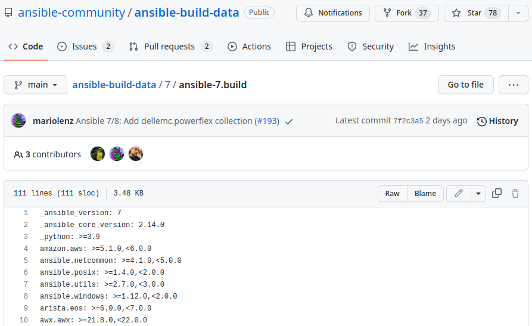https://github.com/ansible-community/ansible-build-data/blob/main/7/ansible-7.build
Finding versions of included collections
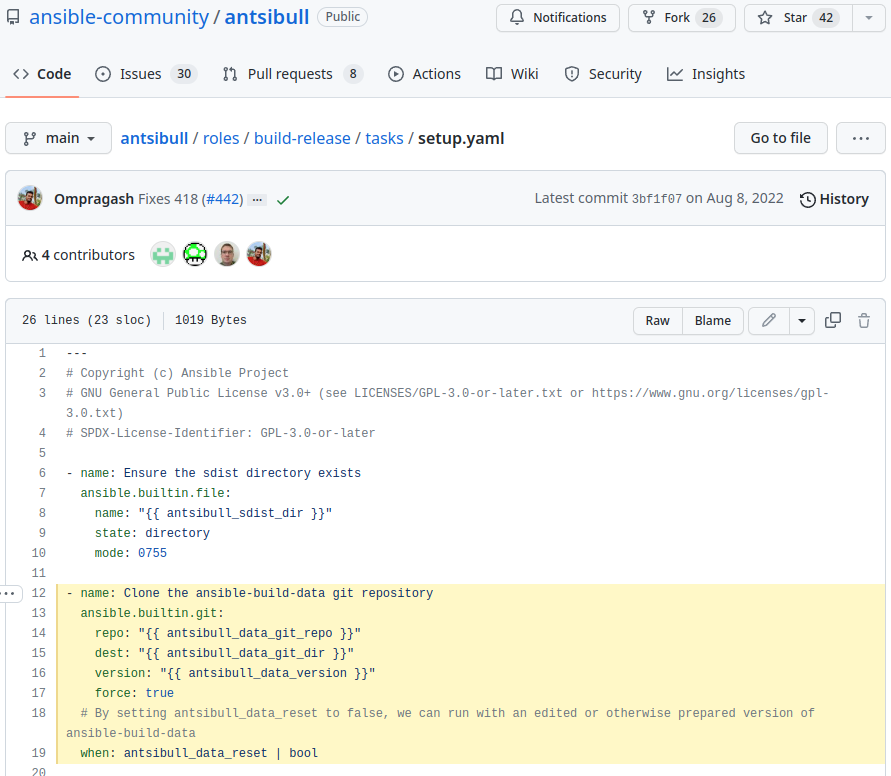https://github.com/ansible-community/antsibull/blob/main/roles/build-release/tasks/setup.yaml
Finding the latest versions
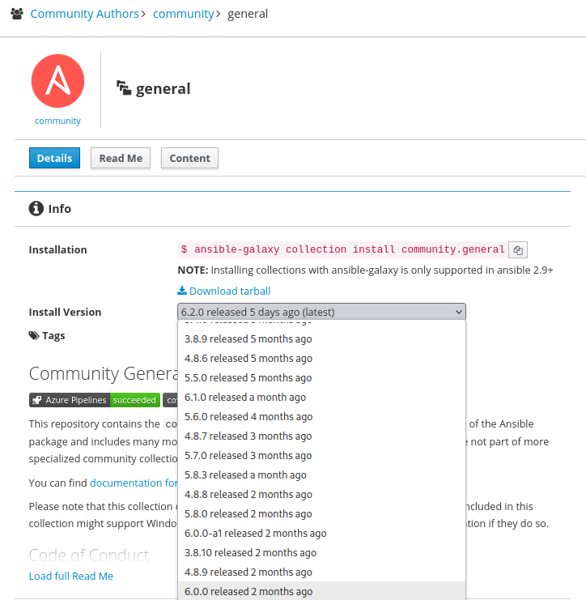https://galaxy.ansible.com/community/general
Finding the latest versions
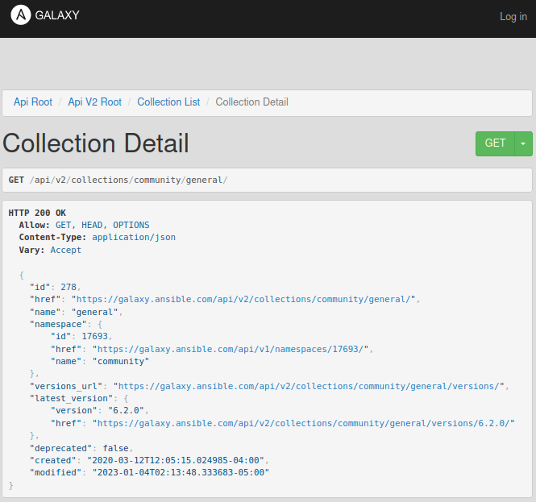https://galaxy.ansible.com/api/v2/collections/community/general/
... and downloading them
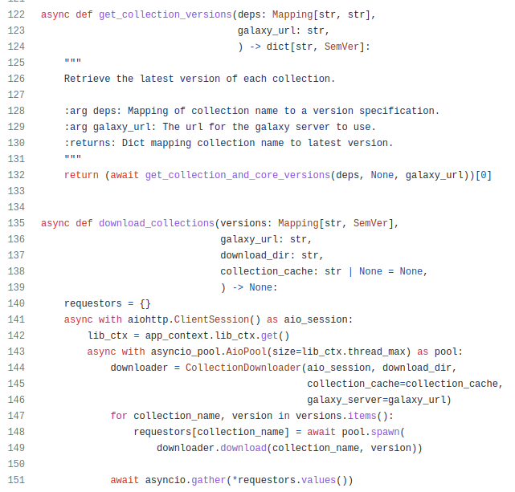https://github.com/ansible-community/antsibull/blob/main/src/antsibull/build_ansible_commands.py
Aggregating changelog fragments
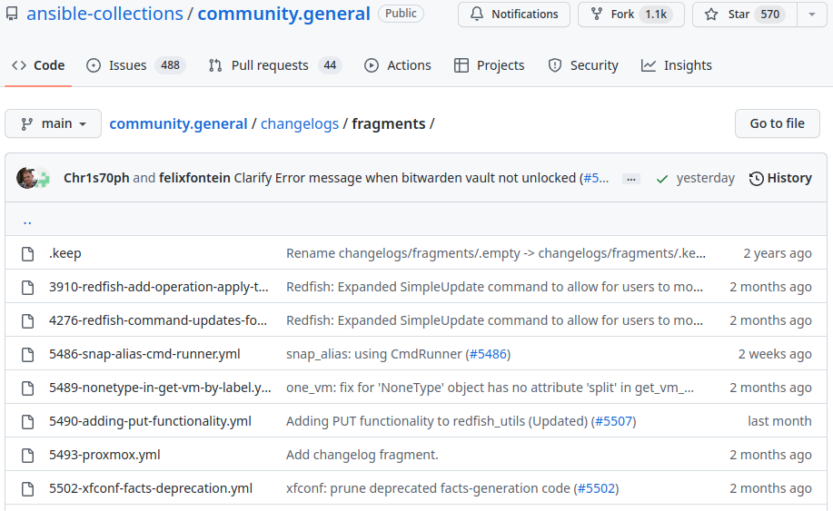https://github.com/ansible-collections/community.general/tree/main/changelogs/fragments
Aggregating changelog fragments
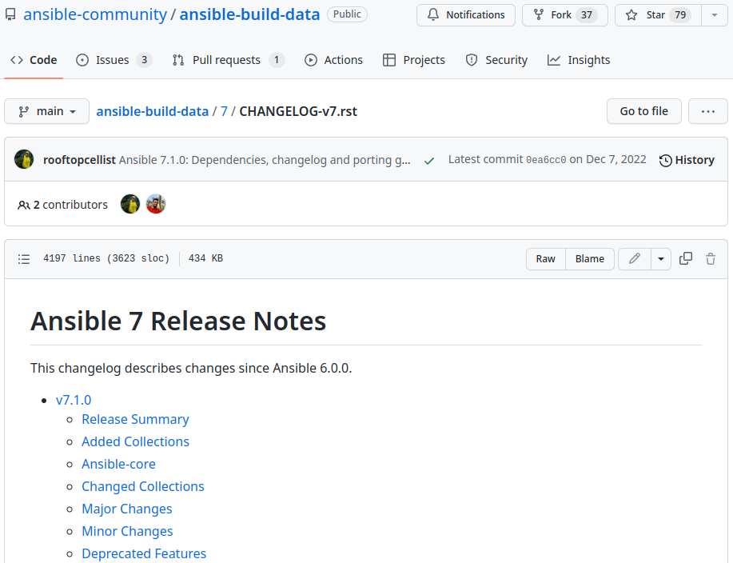https://github.com/ansible-community/ansible-build-data/blob/main/7/CHANGELOG-v7.rst
Aggregating changelog fragments
(Major or breaking changes, deprecations)
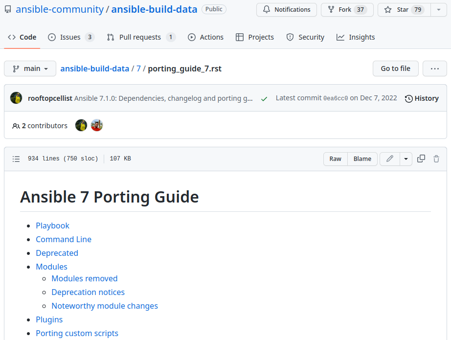https://github.com/ansible-community/ansible-build-data/blob/main/7/porting_guide_7.rst
Aggregating changelog fragments
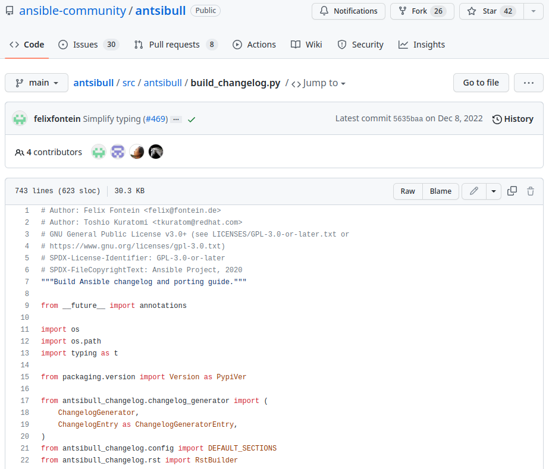https://github.com/ansible-community/antsibull/blob/main/src/antsibull/build_changelog.py
Python packaging files
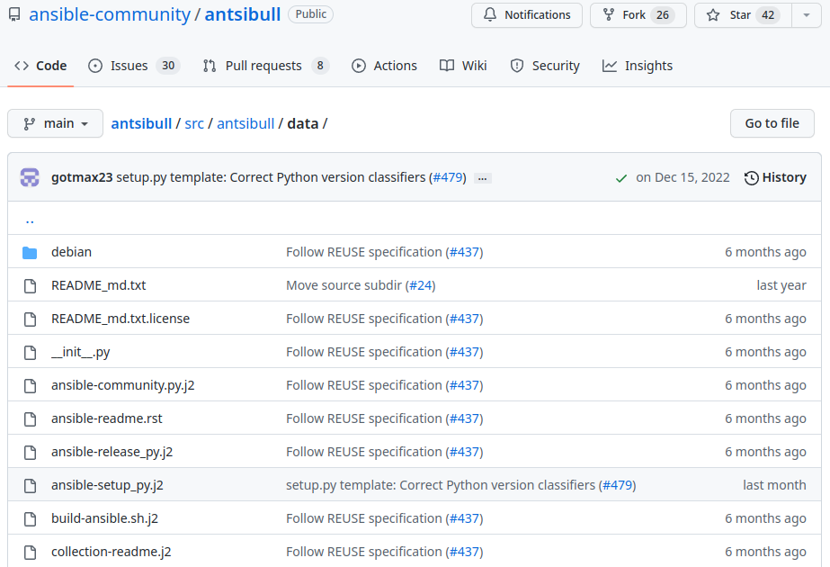https://github.com/ansible-community/antsibull/tree/main/src/antsibull/data
Building the ansible package

Building the ansible package wheel
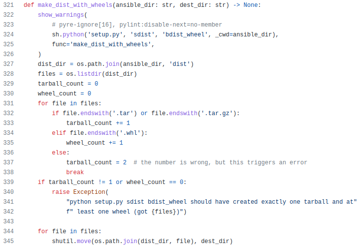
https://github.com/ansible-community/antsibull/blob/main/src/antsibull/build_ansible_commands.py
Pulling it all together (with Ansible)
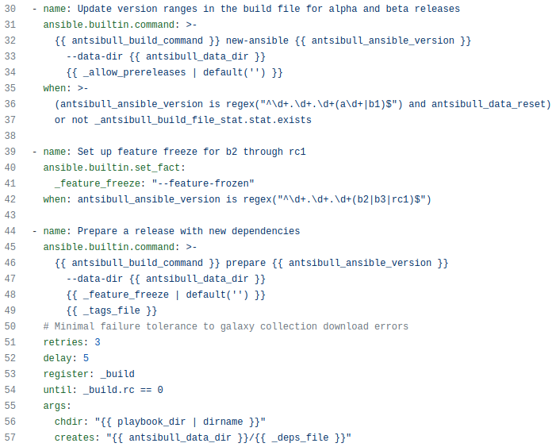https://github.com/ansible-community/antsibull/blob/main/roles/build-release/tasks/build.yaml
Pulling it all together (with Ansible)
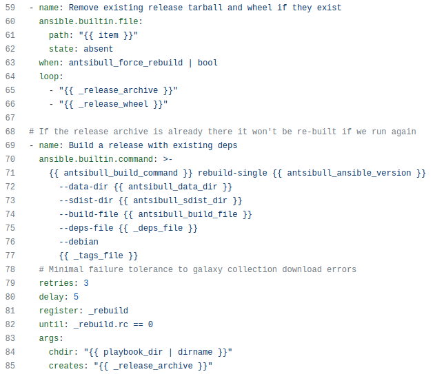https://github.com/ansible-community/antsibull/blob/main/roles/build-release/tasks/build.yaml
Installing ansible with Ansible 😱
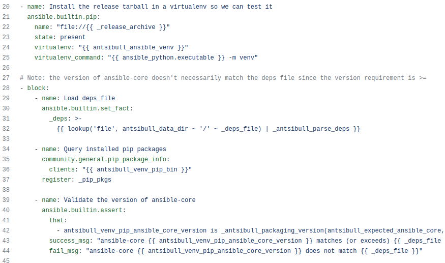https://github.com/ansible-community/antsibull/blob/main/roles/build-release/tasks/tests.yaml
Testing what gets installed
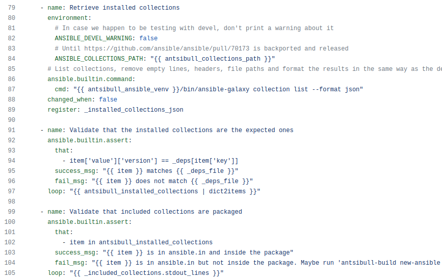https://github.com/ansible-community/antsibull/blob/main/roles/build-release/tasks/tests.yaml
We must go deeper
Testing ansible with ansible-playbook 😂
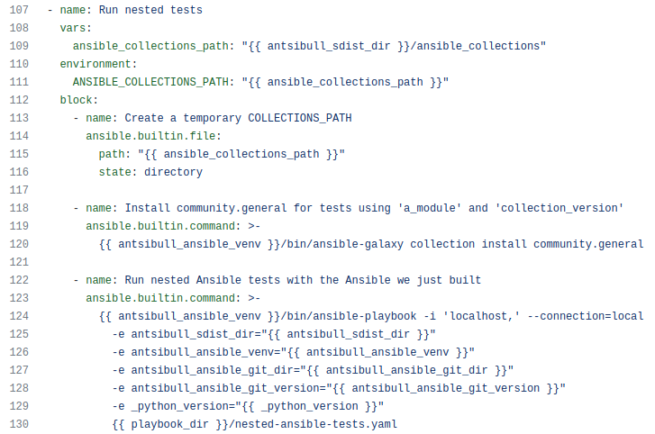https://github.com/ansible-community/antsibull/blob/main/roles/build-release/tasks/tests.yaml
Testing module and collection availability
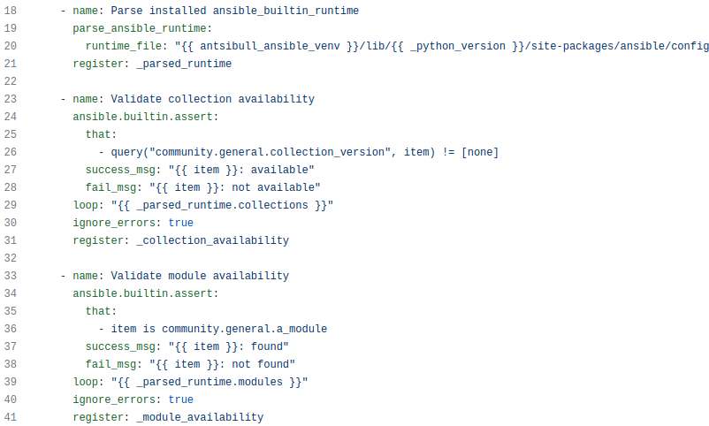https://github.com/ansible-community/antsibull/blob/main/playbooks/nested-ansible-tests.yaml
Testing module and collection availability
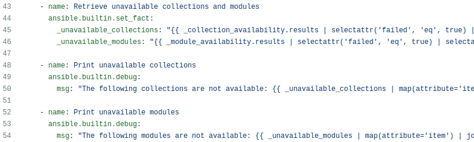https://github.com/ansible-community/antsibull/blob/main/playbooks/nested-ansible-tests.yaml
By the way: ansible_builtin_runtime.yml
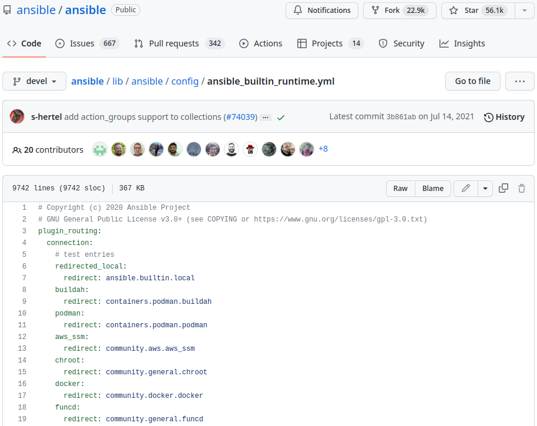https://github.com/ansible/ansible/blob/devel/lib/ansible/config/ansible_builtin_runtime.yml
Testing ansible with ansible-playbook running ansible with the ansible repository
🤣
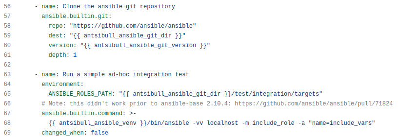https://github.com/ansible-community/antsibull/blob/main/playbooks/nested-ansible-tests.yaml
... and then record all that with a parrot
Is this cheating ?
It's not: Ansible is a great abstraction layer for automating workflows and integrating tools together.

https://github.com/ansible-community/ara
It records playbooks

https://demo.recordsansible.org/?path=build-single-release.yaml
It records hosts, tasks, results and files
(and a bunch of other things, too)
Demo !

https://demo.recordsansible.org/playbooks/3519.html
Getting started
# Install ansible (or ansible-core) with ara (including API server dependencies)
python3 -m pip install --user ansible "ara[server]"
# Configure Ansible to use the ara callback plugin
export ANSIBLE_CALLBACK_PLUGINS="$(python3 -m ara.setup.callback_plugins)"
# Run an Ansible playbook as usual
ansible-playbook hello-world.yml
# Use the CLI to see recorded playbooks
ara playbook list
# Start the development server at http://127.0.0.1:8000
# to query the API or browse recorded results
ara-manage runserverGetting started (with a server)
# Create a directory for a volume to store settings and a sqlite database
mkdir -p ~/.ara/server
# Start an API server with docker from the image on DockerHub:
docker run --name api-server --detach --tty \
--volume ~/.ara/server:/opt/ara -p 8000:8000 \
docker.io/recordsansible/ara-api:latest
# or with podman from the image on quay.io:
podman run --name api-server --detach --tty \
--volume ~/.ara/server:/opt/ara -p 8000:8000 \
quay.io/recordsansible/ara-api:latestGetting started (with a server)
# Install ansible (or ansible-core) with ara (excluding API server dependencies)
python3 -m pip install --user ansible ara
# Configure Ansible to use the ara callback plugin
export ANSIBLE_CALLBACK_PLUGINS="$(python3 -m ara.setup.callback_plugins)"
# Set up the ara callback to know where the API server is located
export ARA_API_CLIENT="http"
export ARA_API_SERVER="http://127.0.0.1:8000"
# Run an Ansible playbook as usual
ansible-playbook playbook.yaml
# Use the CLI to see recorded playbooks
ara playbook list
# Browse http://127.0.0.1:8000 (running from the container)
# to view the reporting interfaceWant to know more ?
- 2023-02-07, 14:00–14:50, B.1.017: How ARA Records Ansible playbooks and makes them easier to understand and troubleshoot
- 2023-02-08, 09:00–18:00, B.1.017: Ansible Contributor Summit
- FOSDEM 2022: Simple (but useful) Ansible reporting with ara
Thank You!
Any questions?
Come chat with the community:
- https://docs.ansible.com/ansible/latest/community/communication.html
- #ansible-community (libera.chat) bridged to #community:ansible.com (Matrix)
- #ansible-packaging (libera.chat) bridged to #packaging:ansible.com (Matrix)
- https://ara.recordsansible.org/community/
- #ara (libera.chat) bridged to #ara:libera.chat (Matrix)
Reach out:
- David Moreau-Simard
- Matrix: dmsimard:matrix.org
- Mastodon: fosstodon.org/@rfc2549